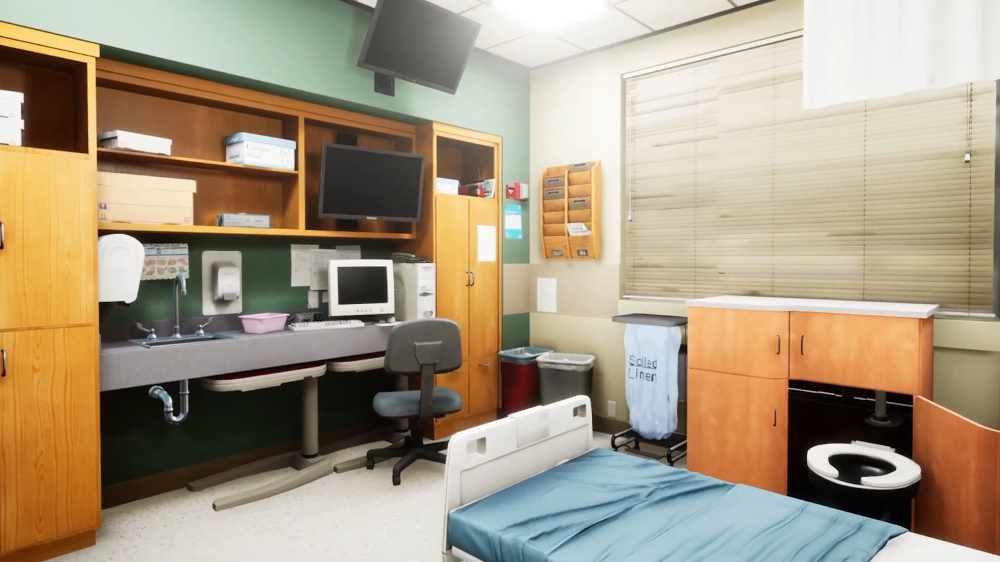
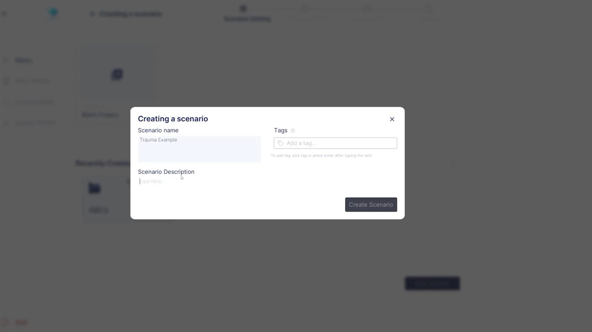
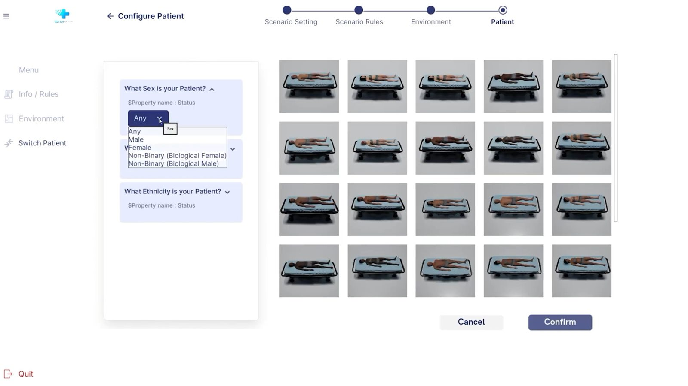
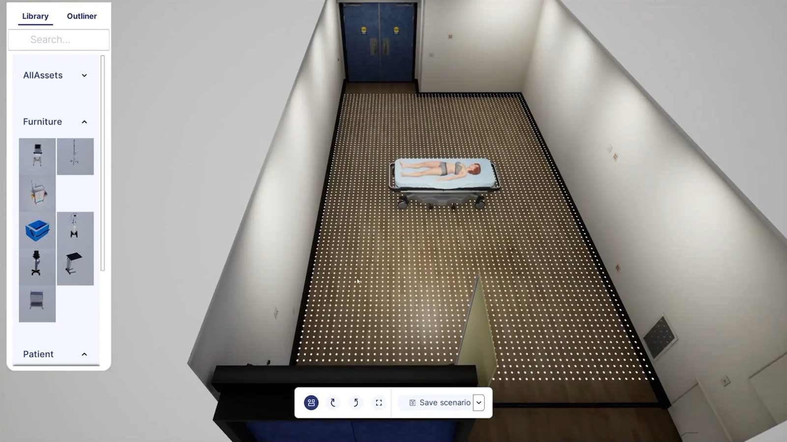
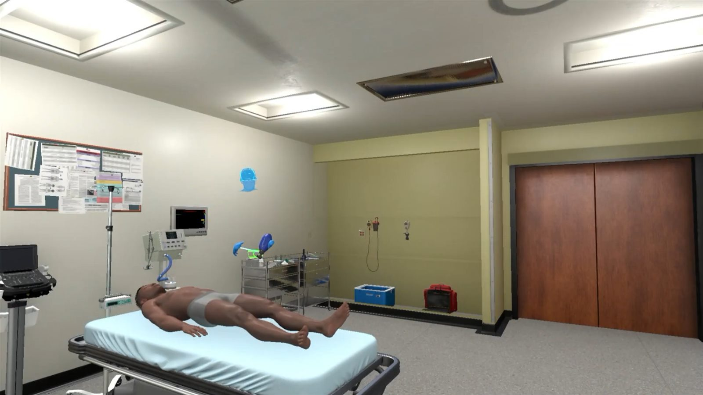
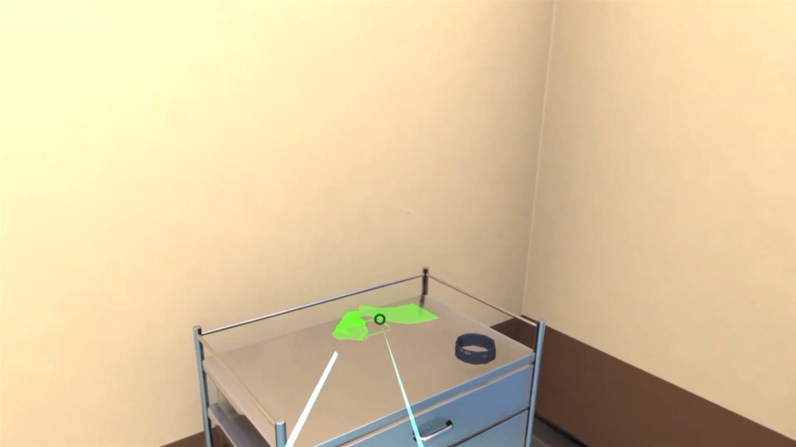

- Built the scenario and patient designer as a four step flow: scenario setting, rules, environment, patient.
- Filtered a metahuman patient library down by the attributes a case needs, so training is not always the same face.
- Refactored the room designer's placement system into a state machine to manage player interaction with the grid: idle, object clicked, object focused.
- Grids nest inside grids, one active at a time. The floor is a grid for placing beds and furniture. Focus a table and it exposes its own grid for placing tools on top. Open a drawer and that focuses a further grid inside it.
- Any placeable surface, floor, tabletop, wall, drawer, is a grid; any placeable object is a GridItem. Wall mounted equipment uses the same system as a bed on the floor.
- Saved and restored the position and rotation of every GridItem in a scene, so a dressed room reloads exactly as it was left.
- One build path to Quest 2, Quest 3 and PC VR. The standalone headsets set the budget for what can be in a room and what the authoring UI costs while the scene is loaded behind it.
- The effect: instructors author their own simulations, and engineering stopped being the bottleneck on content.




